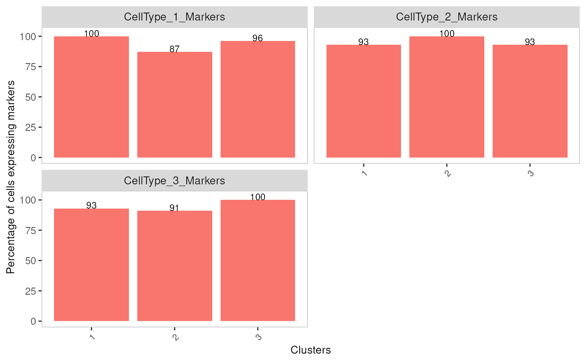
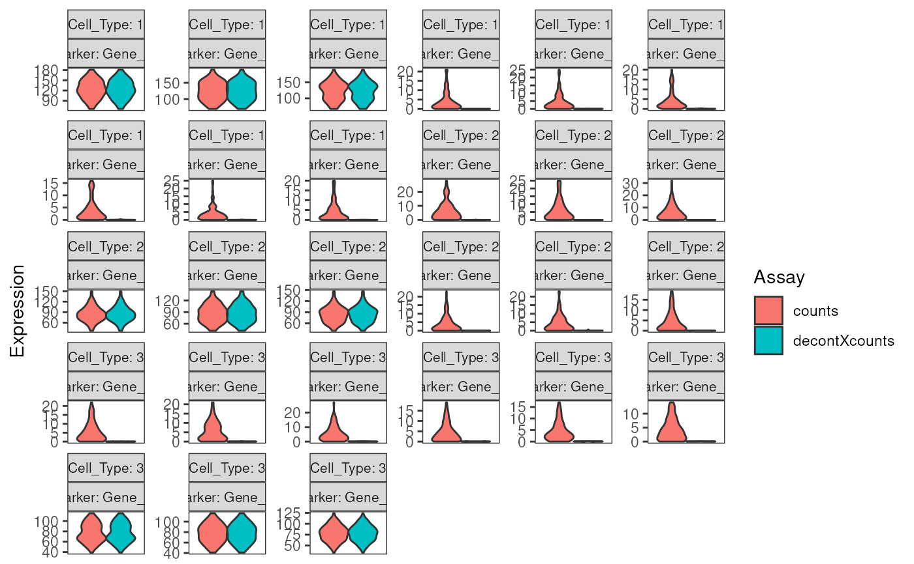

Plots expression of marker genes before and after decontamination
plotDecontXMarkerExpression.RdGenerates a violin plot that shows the counts of marker
genes in cells across specific clusters or cell types. Can be used to view
the expression of marker genes in different cell types before and after
decontamination with decontX.
plotDecontXMarkerExpression(
x,
markers,
groupClusters = NULL,
assayName = c("counts", "decontXcounts"),
z = NULL,
exactMatch = TRUE,
by = "rownames",
log1p = FALSE,
ncol = NULL,
plotDots = FALSE,
dotSize = 0.1
)Arguments
- x
Either a SingleCellExperiment or a matrix-like object of counts.
- markers
Character Vector or List. A character vector or list of character vectors with the names of the marker genes of interest.
- groupClusters
List. A named list that allows cell clusters labels coded in
zto be regrouped and renamed on the fly. For example,list(Tcells=c(1, 2), Bcells=7)would recode clusters 1 and 2 to "Tcells" and cluster 7 to "Bcells". Note that if this is used, clusters inznot found ingroupClusterswill be excluded. DefaultNULL.- assayName
Character vector. Name(s) of the assay(s) to plot if
xis a SingleCellExperiment. If more than one assay is listed, then side-by-side violin plots will be generated. Defaultc("counts", "decontXcounts").- z
Character, Integer, or Vector. Indicates the cluster labels for each cell. If
xis a SingleCellExperiment andz = NULL, then the cluster labels fromdecontXwill be retreived from thecolDataofx(i.e.colData(x)$decontX_clusters). Ifzis a single character or integer, then that column will be retrived fromcolDataofx. (i.e.colData(x)[,z]). Ifxis a counts matrix, thenzwill need to be a vector the same length as the number of columns inxthat indicate the cluster to which each cell belongs. DefaultNULL.- exactMatch
Boolean. Whether to only identify exact matches for the markers or to identify partial matches using
grep. SeeretrieveFeatureIndexfor more details. DefaultTRUE.- by
Character. Where to search for the markers if
xis a SingleCellExperiment. SeeretrieveFeatureIndexfor more details. Ifxis a matrix, then this must be set to"rownames". Default"rownames".- log1p
Boolean. Whether to apply the function
log1pto the data before plotting. This function will add a pseudocount of 1 and then log transform the expression values. DefaultFALSE.- ncol
Integer. Number of columns to make in the plot. Default
NULL.- plotDots
Boolean. If
TRUE, the expression of features will be plotted as points in addition to the violin curve. DefaultFALSE.- dotSize
Numeric. Size of points if
plotDots = TRUE. Default0.1.
Value
Returns a ggplot object.
See also
See decontX for a full example of how to estimate
and plot contamination.
Examples
# Generate matrix with contamination
s <- simulateContamination(seed = 12345)
library(SingleCellExperiment)
library(celda)
sce <- SingleCellExperiment(list(counts = s$observedCounts))
sce <- decontX(sce)
#> --------------------------------------------------
#> Starting DecontX
#> --------------------------------------------------
#> Sun Nov 22 00:07:56 2026 .. Analyzing all cells
#> Sun Nov 22 00:07:56 2026 .... Converting to sparse matrix
#> Sun Nov 22 00:07:56 2026 .... Generating UMAP and estimating cell types
#> Warning: 'librarySizeFactors' is deprecated.
#> Use 'scrapper::centerSizeFactors' instead.
#> See help("Deprecated")
#> Warning: 'normalizeCounts' is deprecated.
#> Use 'scrapper::normalizeCounts' instead.
#> See help("Deprecated")
#> Sun Nov 22 00:08:00 2026 .... Estimating contamination
#> Sun Nov 22 00:08:00 2026 ...... Completed iteration: 9 | converge: 0.0009154
#> Sun Nov 22 00:08:00 2026 .. Calculating final decontaminated matrix
#> --------------------------------------------------
#> Completed DecontX. Total time: 3.688083 secs
#> --------------------------------------------------
# Plot contamination on UMAP
plotDecontXContamination(sce)
 # Plot decontX cluster labels
umap <- reducedDim(sce)
celda::plotDimReduceCluster(x = sce$decontX_clusters,
dim1 = umap[, 1], dim2 = umap[, 2], )
# Plot decontX cluster labels
umap <- reducedDim(sce)
celda::plotDimReduceCluster(x = sce$decontX_clusters,
dim1 = umap[, 1], dim2 = umap[, 2], )
 # Plot percentage of marker genes detected
# in each cell cluster before decontamination
s$markers
#> $CellType_1_Markers
#> [1] "Gene_47" "Gene_32" "Gene_86"
#>
#> $CellType_2_Markers
#> [1] "Gene_70" "Gene_33" "Gene_48"
#>
#> $CellType_3_Markers
#> [1] "Gene_74" "Gene_26" "Gene_20"
#>
plotDecontXMarkerPercentage(sce, markers = s$markers, assayName = "counts")
# Plot percentage of marker genes detected
# in each cell cluster before decontamination
s$markers
#> $CellType_1_Markers
#> [1] "Gene_47" "Gene_32" "Gene_86"
#>
#> $CellType_2_Markers
#> [1] "Gene_70" "Gene_33" "Gene_48"
#>
#> $CellType_3_Markers
#> [1] "Gene_74" "Gene_26" "Gene_20"
#>
plotDecontXMarkerPercentage(sce, markers = s$markers, assayName = "counts")

# Plot percentage of marker genes detected
# in each cell cluster after contamination
plotDecontXMarkerPercentage(sce, markers = s$markers,
assayName = "decontXcounts")
 # Plot percentage of marker genes detected in each cell
# comparing original and decontaminated counts side-by-side
plotDecontXMarkerPercentage(sce, markers = s$markers,
assayName = c("counts", "decontXcounts"))
# Plot percentage of marker genes detected in each cell
# comparing original and decontaminated counts side-by-side
plotDecontXMarkerPercentage(sce, markers = s$markers,
assayName = c("counts", "decontXcounts"))
 # Plot raw counts of indiviual markers genes before
# and after decontamination
plotDecontXMarkerExpression(sce, unlist(s$markers))
# Plot raw counts of indiviual markers genes before
# and after decontamination
plotDecontXMarkerExpression(sce, unlist(s$markers))
